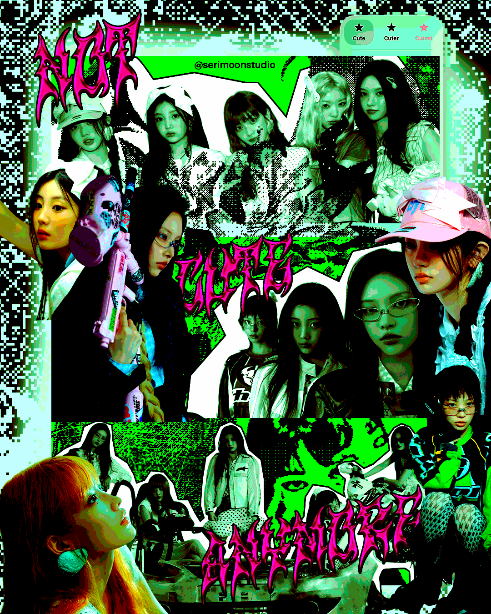
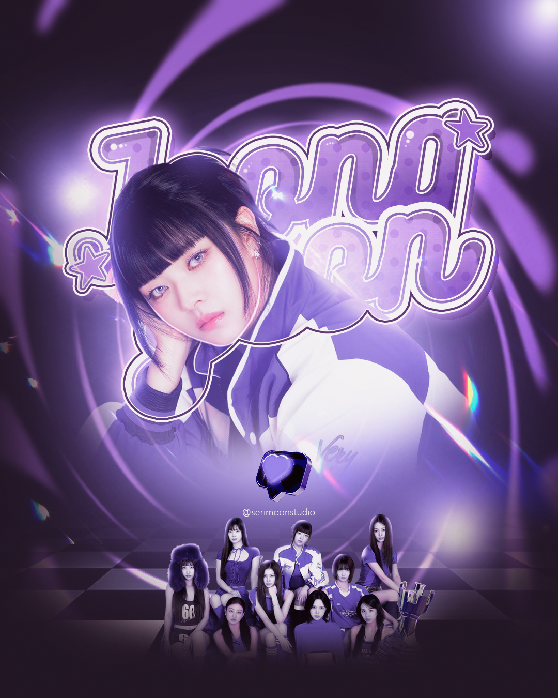
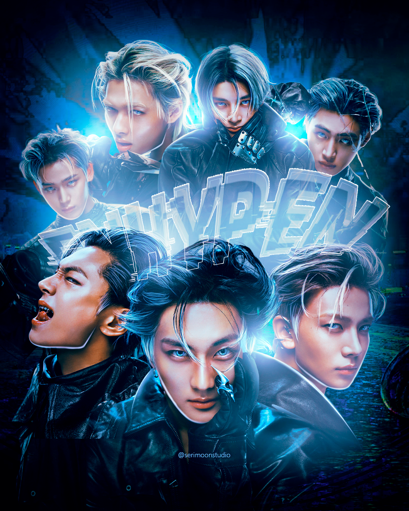
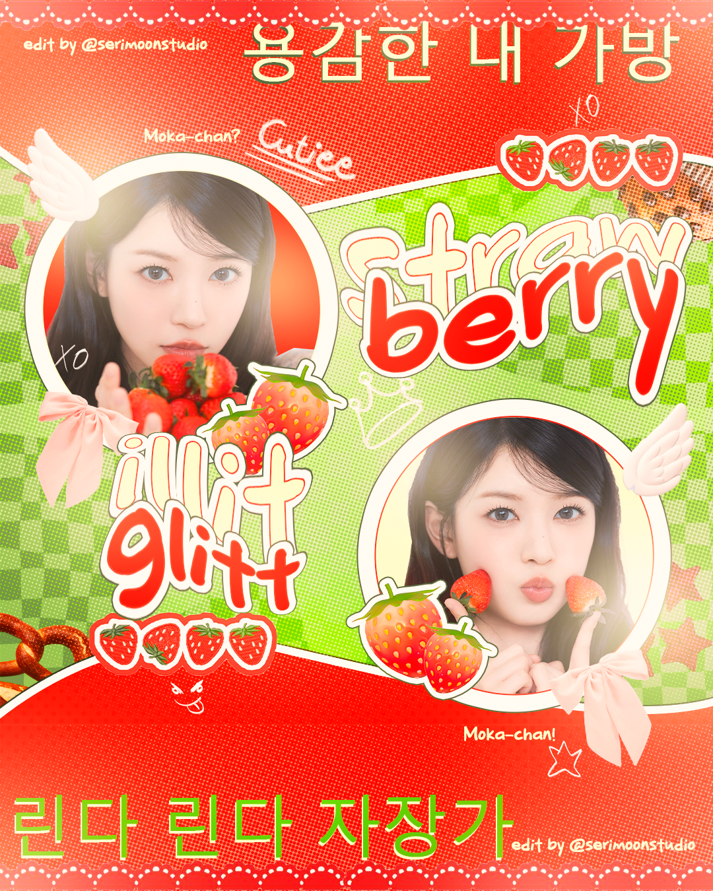
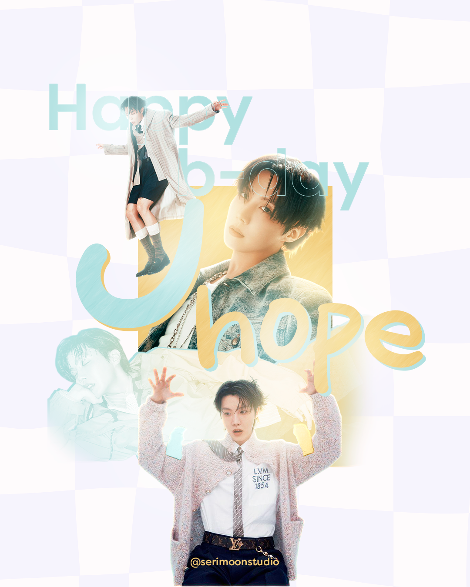

🎨 Photoshop
Edição, manipulação de imagem e composição digital.
🖌 Illustrator
Identidade visual, vetores e design gráfico.
💖 K-design
Estética K-pop, colagens, banners e concept visuals.
Sobre Mim
Olá! Eu sou a Francielly Porto, também conhecida como Fran ou Fifi. Tenho 23 anos, sou designer e curso Design na UFES (Universidade Federal do Espírito Santo).
Fiz estágio na MULTIVIX, na área de Marketing Corporativo, na internet gosto de fazer arte com base nos meus gostos e hobbies como área do K-pop, jogos, séries, etc.
Você pode dar uma olhada no meu Portfólio!
Portfólio
Alguns dos meus trabalhos





Redes Sociais
Onde você pode me encontrar?